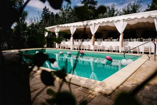
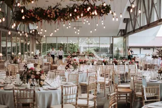
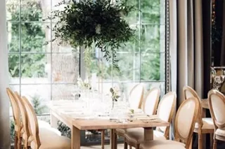
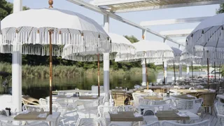

Locații de nuntă în Snagov
- locații în director
- 9
- medie ponderată Google
- 4,4 / 5
- evaluări Google
- 7.123
Cum alegi o locație în Snagov
În Snagov poți începe comparația cu Flying Fox Secret Garden (local pentru evenimente), Heaven By The Lake (local pentru evenimente), Casa Radu Snagov (local pentru evenimente). Aceste proprietăți apar în primele poziții când luăm în calcul împreună nota și numărul de evaluări Google. Salvează adresele care vă interesează pentru a le așeza apoi alături în fișa de comparare a ofertelor.
Pentru partea de afară, avem o descriere a spațiului folosit la evenimente la Casa Radu Snagov — Grădină privată pentru reuniuni · Snagov Mansion — Nuntă în aer liber pe malul lacului. La vizionare, cere schița pentru numărul vostru de persoane, inclusiv locul unde vor sta muzicienii și pe unde intră invitații.
Pentru invitații care rămân peste noapte, în apropiere de Flying Fox Secret Garden apare în evidența turistică și Casa Radu din Snagov. Distanța măsurată între repere este de 0,7 km în linie dreaptă. Verifică traseul de întoarcere și rezervă camerele separat dacă oferta locației nu cuprinde cazare.
Dacă vrei să vezi două proprietăți în aceeași zi, poți continua de la Flying Fox Secret Garden spre Lagoo Snagov din Comuna Snagov. Punctele lor sunt la 0,4 km în linie dreaptă. Deschide traseul înainte să fixezi ora celei de-a doua vizite, mai ales dacă grupul se deplasează cu autocarul.
Locații pentru vizionare
Ordinea ține cont de nota Google și de numărul evaluărilor. Cum calculăm ordinea

Fotografie a locației · Sursa fotografiei Snagov · Local pentru evenimente
Flying Fox Secret Garden
Grădină privată pe Șoseaua Snagov 13A, nota 4,9: nunți de zi cu bufet, botezuri și cununii civile. Ce să întrebi despre capacitate.
Șoseaua Snagov 13A, 077165 Snagov+40 744 440 003
Fotografie a locației · Sursa fotografiei Snagov · Local pentru evenimente
Heaven By The Lake
Local de evenimente pe malul lacului Snagov, cu ponton pentru ceremonie, salon și piscină. Mirii laudă florile și coordonarea. Ce să întrebi.
Str. Mesteacanului, 077165 Snagov+40 743 036 211
Fotografie a locației · Sursa fotografiei Snagov · Local pentru evenimente
Casa Radu Snagov
Casa Radu Snagov, Snagov. Este un exemplu despre cum poate funcționa organizarea într-o vilă, cu altă echipă decât într-un restaurant.
Strada Intrarea Tuberozelor Street, number 8, 077165 Snagov+40 21 310 3672
Hartă ilustrată Snagov · Local pentru evenimente
Artha Park - In timpul saptamanii inchirierea exclusiv online
Artha Park - In timpul saptamanii inchirierea exclusiv online. Un vizitator la Artha Park descrie o ieșire de două ore cu caiacul la Snagov.
Str. Plopilor 1, 077165 Snagov+40 735 868 986
Fotografie a locației · Sursa fotografiei Snagov · Local pentru evenimente
Club Snagov
Hotel pe malul lacului în Snagov Sat, cu trei restaurante și piscine. Recenziile laudă priveliștea, critică mâncarea; întreabă de muzica afară.
1B Nufarului Street, Snagov Sat, Ilfov, Romania, 077165 Snagov+40 728 210 075
Fotografie a locației · Sursa fotografiei Snagov · Local pentru evenimente
Snagov Mansion
Snagov Mansion, Snagov. O familie care a organizat un botez povestește despre neclarități privind taraful afară.
153 A, Strada Florilor, 077165 Snagov+40 741 888 796
Fotografie a locației · Sursa fotografiei Snagov · Restaurant
Jubile By The Lake
Jubile By The Lake, Snagov. În relatarea sa, diferența de confort a contat pentru grupul strâns în jurul aceleiași mese.
077165 Snagov+40 723 856 916
Fotografie a locației · Sursa fotografiei Snagov · Restaurant
Grădina Snagov
Grădina Snagov, Snagov. La Snagov merită să încercați o masă chiar în zona care vă atrage, la ora propusă pentru cină.
Str. Albăstrelelor 24, 077165 Snagov+40 31 222 1733
Fotografie a locației · Sursa fotografiei Snagov · Local pentru evenimente
Snagov Lake Events
Snagov Lake Events. Pentru a compara corect oferta cu cea a unei grădini închiriate fără amenajare, cereți inventarul pieselor și numărul meselor disponibile.
Strada Zorelelor 120C, 077165 Snagov+40 724 289 066
Întrebări despre locațiile din Snagov
Ce spații sunt documentate pentru evenimente în aer liber în Snagov?
Casa Radu Snagov — Grădină privată pentru reuniuni. Snagov Mansion — Nuntă în aer liber pe malul lacului.
Care locație din Snagov are cele mai multe evaluări Google?
Grădina Snagov are 1.924 de evaluări în profilul Google folosit la documentare. Evaluările acoperă și alte experiențe la proprietate, inclusiv vizitele fără eveniment.
Unde apare o intrare accesibilă în Snagov?
Profilurile Google indică o intrare accesibilă la Flying Fox Secret Garden, Heaven By The Lake, Artha Park - In timpul saptamanii inchirierea exclusiv online. Pentru o cununie în exterior, cere detalii despre traseul dintre intrare și zona cu scaune.
Ce alte localități pot include într-o vizionare lângă Snagov?
Cele mai apropiate adrese comparate pe hartă sunt în Comuna Snagov, Siliștea Snagovului, Izvorani. Găsești mai jos distanțele dintre proprietățile folosite pentru această comparație.
Vizionări în apropiere
- Comuna Snagov · 4 locații. Între Flying Fox Secret Garden și Lagoo Snagov sunt 0,4 km în linie dreaptă.
- Siliștea Snagovului · 2 locații. Între Snagov Mansion și Palatul Ginga sunt 1,1 km în linie dreaptă.
- Izvorani · 1 locație. Între Snagov Lake Events și ASTERIA Lac Snagov sunt 1,3 km în linie dreaptă.
Alte adrese din aceeași unitate administrativă
Casa Vlasia (Comuna Snagov), Gradinile Jolie (Tâncăbești), Lagoo Garden & Grill (Comuna Snagov), Lagoo Snagov (Comuna Snagov), Locații evenimente Evergreen Snagov (Tâncăbești), Sura cu Nuferi (Comuna Snagov).